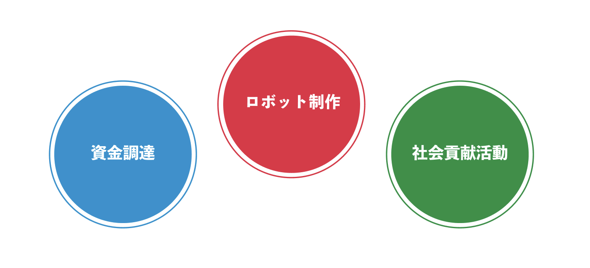

FIRST® Robotics Competition（FRC）は、世界最大規模のロボット競技会です。
この大会には10万人もの参加者がおり、
2024年2月の時点で26カ国から3,200チーム以上が集まり、
自ら設計・製作したロボットを競わせています。
アメリカに本拠を置く非営利組織「FIRST®」は、
「For Inspiration and Recognition of Science and Technology」の頭文字を集めて名付けられ、
FIRST® Robotics Competition（FRC）を含む様々なイベントを運営しています。
この団体は、若者がロボット工学に興味を持ち、
学ぶためのプラットフォームを提供することに注力しており、
「More Than Robots」、すなわち「ロボット以上」の理念を標榜しています。
この言葉は、技術教育や競技を通じて、技術だけではなく、
チームワーク、創造性、リーダーシップといった
人間の資質の育成を目指すFIRST®の目標を象徴しています。
FRCの3要素
Three elements of the FRC
ロボット制作
Robot Production
製作されるロボットは、サイズは幅と長さ1m、重さ50kgにもなります。
この大きなロボットを、大会のルール公開後約6週間で完成させます。
競技は3チーム対3チームで行われ、チームの組み合わせはランダム。
参加チームは初心者からベテランまで様々です。
技術面では、プロのエンジニアが使うツールや、JavaやC言語系を使用します。
異国のチームとのコミュニケーションやルール理解のために、大会では英語が必須です。
また、競技内容は多岐にわたり、毎年変わるルールに応じて柔軟な思考と創造性が求められます。

私たちは高専の先生方と試行錯誤しながら
日々活動しています。
こちらは、週に一度のメンバー全体で集まる会議の様子です。
社会貢献活動
Social Contribution Activities
FRCでは、アウトリーチ活動(社会貢献活動)も重要な要素です。
FRCには様々な賞がありますが、最も誇り高い賞として、Chairman's Awardというものがあります。
この賞は、ロボットの成績に関わらず、世界大会に出場する権利を獲得することができます。
この賞はFIRST®の信念に則ってアウトリーチ活動をしたチームに贈られます。
私たちはこの賞の獲得も目標にし、活動しています。
FRCを普通のロボコンと考えてはいけません。
FRCはロボットにおけるハードウェア・プログラミングだけでなく、
プレゼン、スライド・資料作成や企業とのスポンサー契約、
クラウドファンディングなど、様々な要素がある、
いうなればロボコンを超えたロボコンなのです。
これまでの社会貢献活動については、以下のページをご覧ください。
資金調達
Fundraisings
¥ 7500000
これは、私たちが2024年に集めた資金の合計額です。
FRCでは、資金調達もとても重要な要素の一つです。
大会出場費(約80万円)、ロボット制作費(約50万円)、渡航費(約300万円)などが必要になってきます。
また、世界大会に出場するとなると、追加で参加費(約100万円)、渡航費(約300万円)などが必要です。
これらの費用は全て自分たちで集める必要があります。
私たちHanabiは、スポンサー契約を通じて資金集めを行いました。
スポンサー様については、以下のページをご覧ください。